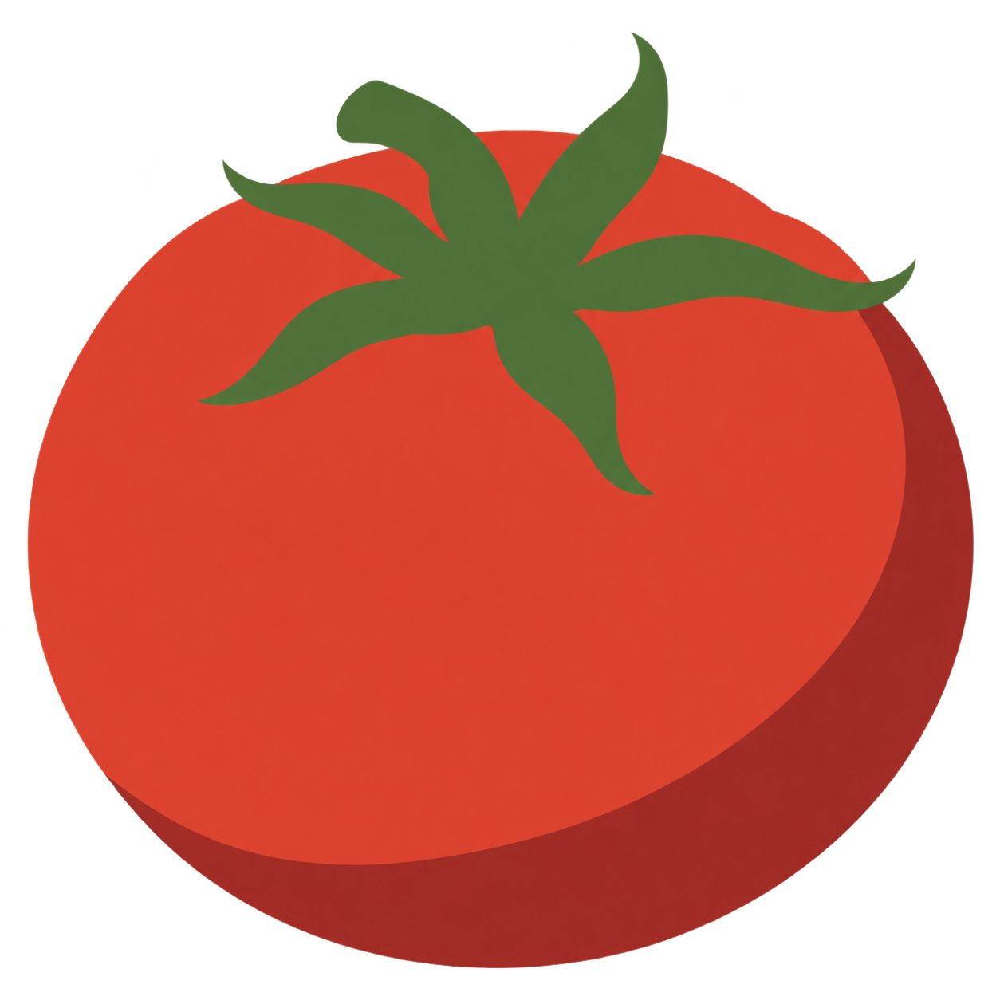

Produktionsansicht mit Motivspoiler. Technische Zertifizierung, Motivqualität und redaktionelle Freigabe sind getrennt. Motiv-/Spielabnahme: offen.
Quelle: tomate-ma-r01 · Datei: MA-r01.png
Original SHA-256: e6fdefa4a047f8282f918f45bd5b5dd311e7f97cf487090b32394bf89c0f564a
Normalisiert SHA-256: 47098d186906950f449a911dc705a4ebb527f27494d2cc1153de67afc2c0dea2

{'format': 'picross-image-design-v1', 'source_id': 'tomate-ma-r01', 'origin': 'Native faithful abstraction MA-r01 from approved A-r01, SHA-256 853f8cfd9dd984dd244e0093e7f83719f9285c8ffcc3df61585fabb301e34e74.', 'rights': 'User-commissioned native ChatGPT image generation for this Picross project, no third-party source assets.', 'briefing': 'Human-approved MA-r01 from A-r01; approval and full 15/16, 2/3-color corridor recorded before import in approvals/motif-approval.json. Preserve round fruit, elevated three-quarter view, star calyx and thick left-curved stem. No source, crop or palette change outside approved corridor.', 'working_mode': 'faithful', 'width': 15, 'height': 15, 'crop': [35, 35, 1221, 1221], 'fit': 'exact', 'background': '#ffffff', 'alpha_below': 128, 'mode': 'color', 'palette': [{'id': 'green', 'rgb': '#477635'}, {'id': 'red', 'rgb': '#df3f2f'}], 'variants': [{'id': 'area-128', 'method': 'area', 'threshold': 128}]}
{'format': 'PNG', 'source_size': [1254, 1254], 'source_mode': 'RGBA', 'orientation': 1, 'normalized_size': [1254, 1254], 'color_treatment': 'untagged/sRGB RGB or gray interpreted as sRGB', 'icc_sha256': None, 'alpha': 'preserved, composited against design background only during rasterization'}
{'tool': 'rp3-image-1', 'pillow': '12.3.0', 'jpeg': '8.0', 'jpeg_turbo': '3.1.4.1', 'littlecms': '2.19', 'zlib': '1.3.1.zlib-ng'}
{'status': 'solved', 'proof_verified': True, 'certified': True, 'logic_hash': 'fc72651e06bc18d9082c12827c7702a710e5bab68c7269510723bd5aaa8dbd67', 'profile': {'id': 'full-line-color', 'version': 1, 'start': 'unknown', 'deduction': 'all-line-supported-values', 'search': False}, 'profile_hash': 'f63ee6c88e6baa9f6a22f386ae532482d7ffb7b9a2237867f0d7cd9960ab608f', 'steps': 48, 'line_evaluations': 78, 'elapsed_seconds': 0.07798300000285963}
Kandidat: 116dad30100cf026309b9e76a7a87222b9023b002e6f69a5cf51769a40578f6d
{'id': 'area-128', 'method': 'area', 'threshold': 128}
| Linie | Vollständige Hinweise (Länge:Farb-ID) |
|---|---|
| 1 | – |
| 2 | 2:green 1:green |
| 3 | 1:green 1:red 4:green 1:red |
| 4 | 3:red 7:green 1:red |
| 5 | 3:red 5:green 5:red |
| 6 | 3:red 1:green 3:red 1:green 5:red |
| 7 | 15:red |
| 8 | 15:red |
| 9 | 15:red |
| 10 | 15:red |
| 11 | 15:red |
| 12 | 13:red |
| 13 | 11:red |
| 14 | 9:red |
| 15 | 5:red |
| Linie | Vollständige Hinweise (Länge:Farb-ID) |
|---|---|
| 1 | 5:red |
| 2 | 8:red |
| 3 | 10:red |
| 4 | 11:red |
| 5 | 1:green 1:red 2:green 8:red |
| 6 | 1:green 1:red 2:green 10:red |
| 7 | 4:green 10:red |
| 8 | 3:green 10:red |
| 9 | 4:green 9:red |
| 10 | 3:green 11:red |
| 11 | 1:red 1:green 10:red |
| 12 | 1:green 10:red |
| 13 | 10:red |
| 14 | 8:red |
| 15 | 5:red |